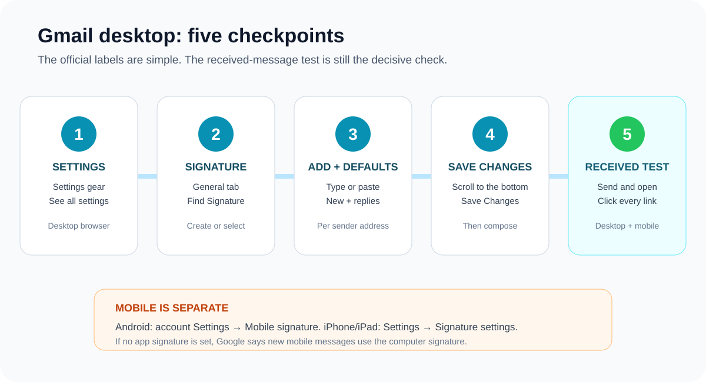

How to Add an Email Signature in Gmail: Desktop & Mobile
On desktop: open Gmail, select Settings → See all settings, find Signature under General, add or paste the signature, choose defaults for new messages and replies, then Save Changes. Gmail’s Android and iPhone/iPad apps have a separate mobile-signature setting.
Google’s current instructions confirm these paths, support multiple desktop signatures, and state that a Gmail signature can contain up to 10,000 characters. Use Google’s official Gmail signature guide beside the steps below.

Add or paste a Gmail signature on desktop
- Open Gmail in a desktop browser.
- At the top right, select Settings, then See all settings.
- Stay in General and scroll to Signature.
- Create or select a signature, then type into the editor or paste a prepared rich-HTML signature.
- Choose the signature defaults for new emails and replies/forwards. You may deliberately use no default for replies.
- Scroll to the bottom and select Save Changes.
- Compose a new message, confirm the intended signature appears, and send a test.
Paste rich HTML without using the wrong product control
In this product, the export button is labelled Copy HTML. There is no separate “Copy for Gmail” button. After unlocking export, use Copy HTML, click inside Gmail’s signature editor, and paste normally with Ctrl+V on Windows or Cmd+V on Mac.
Do not use a plain-text paste command if you want to preserve formatting. After pasting, inspect the editor for an unexpected extra border, missing image, or altered spacing—but do not treat that preview as final proof.
Product evidence boundary: the generated HTML uses table-based layout, inline styles, explicit image dimensions, and public hosted assets when configured. Gmail may still change the result during paste, send, forwarding, image blocking, or mobile display.
Choose Gmail signature defaults deliberately
Gmail supports multiple signatures. A useful setup is one complete signature for new conversations and a shorter or empty default for replies. When composing, Google also lets you use the Insert signature control to switch signatures for a specific message.
If you use Gmail’s “Send mail as” feature, Google says you can select a different signature for each configured sender address. Confirm the sending address and signature together before sending.
Gmail mobile signatures on Android, iPhone, and iPad
Android
Google’s current Android path is Gmail app → Menu → Settings → choose the Google Account → Mobile signature. Enter the text and confirm. Google also says that if you do not create a mobile signature, new messages use the signature created on your computer.
iPhone and iPad
The current iOS path is Gmail app → Menu → Settings → under Compose and Reply, Signature settings → turn on Mobile Signature → add or edit it → Back to save. Configure each account separately when several accounts are connected.
The mobile control is a simpler app-specific field, so keep essential identity and contact details in text. Send a test from the app you actually use; do not assume the desktop editor and mobile composer behave identically.
Gmail signature troubleshooting
| Symptom | Likely check | Repair |
|---|---|---|
| Signature does not appear | New-message default, reply default, sending address, or mobile override | Select the intended default and test the exact account and device. |
| Image is missing or asks for access | The URL is private, local, temporary, or permission-gated | Use a stable public HTTPS URL and verify it in a signed-out browser. |
| Formatting disappeared | Plain-text paste or fragile CSS | Paste normally and simplify to inline styles and a conservative layout. |
| Signature is too long | Gmail’s 10,000-character limit; Google says images count too | Remove decorative markup or resize/simplify the image treatment. |
| Old signature keeps returning | Several saved signatures or a different sender address | Edit the correct signature and check both default dropdowns. |
Google maintains a separate Gmail signature troubleshooting page for issues such as extra lines, missing images, sharing permissions, and formatting limits.
Test the received Gmail signature
- Send a new message to another Gmail address and to an Outlook address you control.
- Open the received message on desktop and in a narrow mobile inbox.
- Click every link and confirm the exact destination.
- Check a reply and forwarded message for duplicated or oversized signatures.
- Confirm the text still identifies the sender when remote images are unavailable.
Use the email signature health check before installation if you already have HTML. For content and accessibility decisions, use the email signature best-practices checklist.
Build a Gmail signature, then test it
Choose from 24 templates, preview the result, and use Copy HTML when you are ready to install the signature in Gmail.
Create Your Gmail Signature